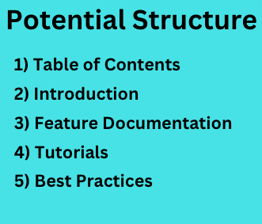
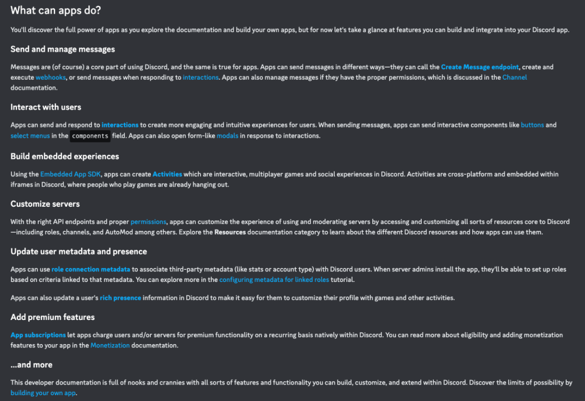
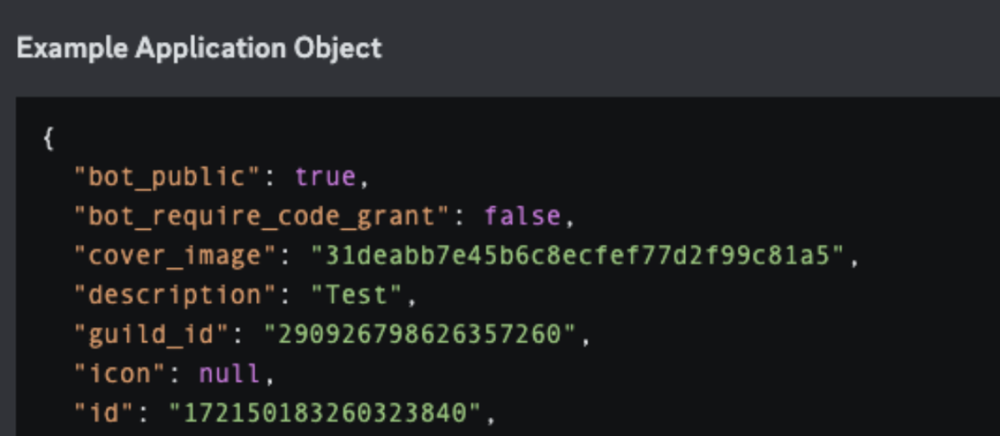
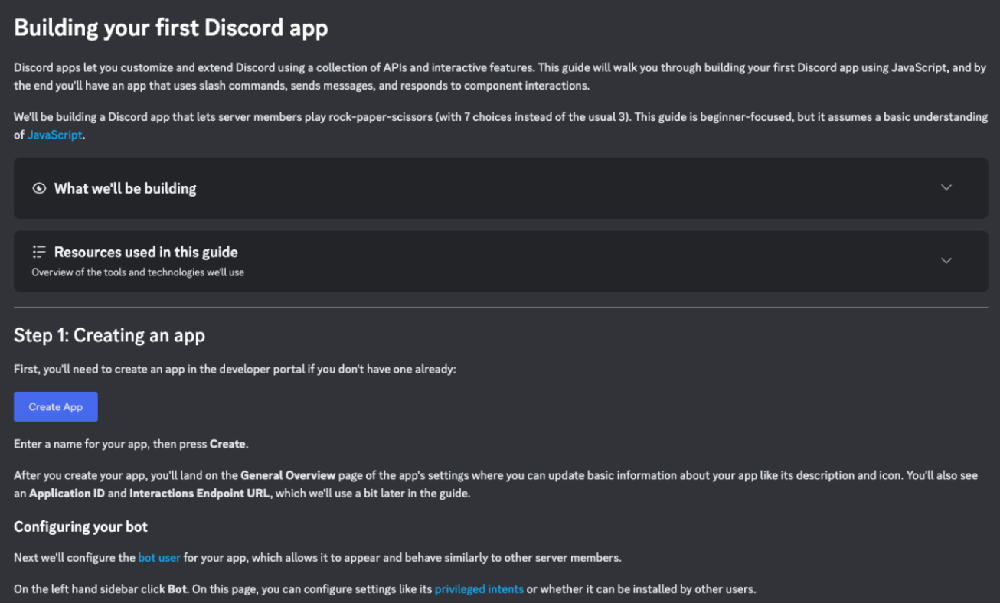

Table of Contents
Introduction to the Technical Documentation Project
For the technical documentation assignment, we were tasked with breaking down a technical document of our choice, and using this document to construct a how-to guide of how to write a similar document. Check out how to write concise, understandable, and engaging end-user documentation here!
How to Write End-User Documentation
A Pathway to Readable and Engaging End-User Documentation
Ben Ancheta
Introduction
As a software engineer building a product, you may be required to write end-user documentation in order to make your product usable by end-users. It can be very difficult to distill technical concepts into guides for new end-users to understand; however, end-user documentation has many benefits such as helping end-users understand how to install and set up a product, along with troubleshooting common issues [1]. Well-written end-user documentation can avoid large quantities of support tickets from users struggling to use basic features of the product, and can help to prevent unethical use of the product if the proper usage is specified in the documentation [2,3].
Initial Considerations
Before starting to write end-user documentation, it’s important to
keep the user’s perspective in mind to ensure that the documentation
is effective and helpful. Keeping the user’s perspective in mind
involves understanding their technical skills, familiarity with the
product or service, and understanding what they wish to achieve by
using your product’s documentation. Tailoring the content of your
end-user documentation to match the user’s expertise and expectations
is crucial.
The desired structure of the documentation is also significant. A
commonly used structure is described in the next section.
Potential Structure
Below is an example of a potential end-user documentation structure that can apply to most kinds of products. The optional sections are highly recommended as they can improve the efficacy of your documentation.

This image displays a graphic detailing a potential structure of
end-user documentation.
Table of Contents
A table of contents can improve the usability and effectiveness of any
document. It improves the ease of navigation by enabling users to
quickly find the needed information without having to read through
irrelevant sections and gives an overview of the topics covered in the
documentation which increases the confidence of users that the
documentation will be able to get them set up and using the product
properly. A detailed table of contents can also increase the perceived
professionalism of the documentation, making users more likely to use
it.
An example table of contents is on the left of this text. The table of
contents should be “sticky”, which means that it moves as the reader
scrolls so that ease of navigation is improved.
Introduction
The introduction section provides a general overview of the product, and details the hardware requirements to run the software product. This section should be engaging and detail key functionalities of the software product that will entice the user and make them interested in the product, and thus in reading the documentation to learn more.

This image displays an example introduction section.
Feature Documentation
This section is generally seen as the most important section in end-user documentation, because it contains the information that most users who visit the documentation are trying to find. This section varies the most between different products’ end-user documentation, because every product’s features are different. When reading different products’ end-user documentation, one might become overwhelmed because the features are completely different. However, there is no need for confusion; clear and engaging feature documentation uses key concepts that can be applied across any type of feature, whether it be an API (requires programming knowledge to use), full-stack application, or even a web application. These key concepts are using boxes to highlight important concepts, using bolding to emphasize specific words, and using a uniform color scheme. Additionally, writers of documentation should attempt to keep paragraphs between two and four sentences in order to avoid overwhelming end-users.

This image displays an example feature documentation section.
Tutorials [Optional, but recommended]
Tutorials are a purely optional section to include in end-user documentation; however, tutorials are unmatched in their ability to engage and teach the end-user about your product. Tutorials should be engaging and beginner-friendly to ensure that all potential users are able to follow the tutorial and gain experience with your product.

This image displays an example tutorial section.
Best Practices [Optional, but recommended]
The best practices section can help users understand the most
efficient way to use your product. This section can also help to
encourage users to follow the proper steps in order to minimize the
occurrences of negative outcomes such as data loss.
Best
practice sections can also highlight advanced features that might not
be able to be explained in the very detailed features section.

This image displays an example best practices section.
Additional Considerations
Color Scheme: The color scheme of the document is important to
consider. For example, younger audiences might prefer dark themes
versus older audiences might prefer more traditional styles with a
white background and black text.
Tone: The tone of the document is also important to consider. Younger
audiences might prefer a more engaging tone that draws their
attention, meanwhile older audiences might prefer a more formal tone.
Takeaways
End-user documentation is an essential feature when releasing software
to any audience of end-users. Knowing how to write good end-user
documentation can be the difference between having mountains of
support tickets or even keeping customers happy and using your
product.
Additionally, having the ability to write functional end-user
documentation is a soft-skill that will set you apart from your
colleagues and could help you advance faster in your career as a
result.
Acknowledgements
I would like to thank my ENGW 3302 peers, Ailton (AJ) Teixeira and
Madison O'neil, along with my instructor, Alison Stephens, for their
feedback during the review period, which has been critical in bringing
this how-to document from conception to completion. More thanks goes
to Discord’s great and interactive end-user documentation, which is
very comprehensive and shows good examples of many of the concepts
that I outline in this how-to document.
A huge thank you overall
to my friends and family; I wouldn’t be who I am today without all of
you.
Works Cited
[1] “How to Create Effective End-User Documentation (+Examples),” The
Whatfix Blog | Drive Digital Adoption, Oct. 01, 2021.
https://whatfix.com/blog/user-documentation/
[2] J. Prabhakaran,
“7 Best Examples of User Documentation & Help Guides,” Document360,
Jul. 07, 2020. https://document360.com/blog/user-documentation/
[3] “8 Steps to Creating Great End User Documentation,”
Knowledgebase Blog, Feb. 02, 2021.
https://www.proprofskb.com/blog/steps-creating-great-end-user-documentation/
[4] “End-User Documentation Guide: What it is & How to Make it
Effective | Scribe,” scribehow.com.
https://scribehow.com/library/end-user-documentation#:~:text=how%20it
(accessed Mar. 28, 2024).
[5] “Discord Developer Portal — API
Docs for Bots and Developers,” Discord Developer Portal.
https://discord.com/developers/docs/intro